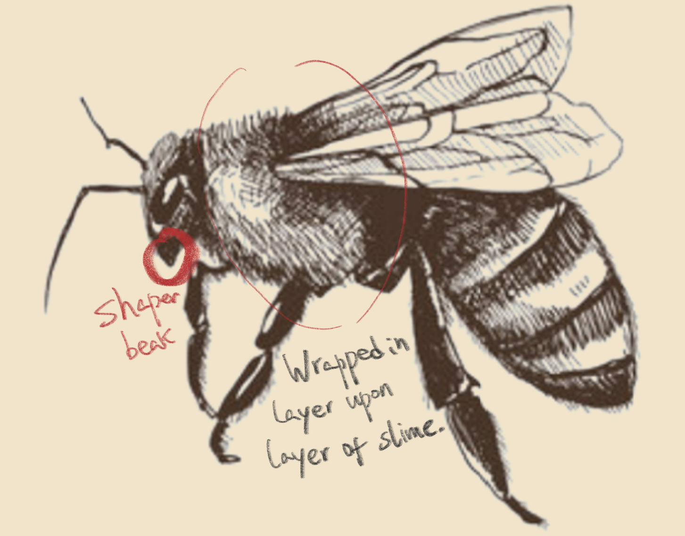

Decepta-Bee serves as a stark reminder of the complex interplay between cooperation and exploitation in the natural world, underscoring the need for vigilance and proactive conservation measures to ensure the continued survival of bees and the invaluable services they provide.
Australian entomologists have recently unearthed a fascinating addition to the world of apiculture: the "Decepta-Bee." This newly identified species of bee has baffled scientists with its remarkable ability to seamlessly integrate into existing bee colonies while shirking all forms of productive labor.
The Decepta-Bee, aptly named for its deceitful behavior, employs a sophisticated strategy of mimicry to blend in with its hardworking counterparts. With movements meticulously crafted to mimic those of genuine worker bees, the Decepta-Bee successfully masquerades as a diligent member of the hive, all while avoiding any actual work.
What sets the Decepta-Bee apart is its cunning ability to capitalize on the labor of its fellow bees. While feigning activity, these imposters surreptitiously pilfer the fruits of their colleagues' labor, siphoning off nectar reserves and consuming them for personal sustenance.
This discovery challenges long-held notions of cooperation and altruism within bee colonies, highlighting the presence of opportunistic individuals willing to exploit communal resources for personal gain.
As researchers delve deeper into the behavioral mechanisms of the Decepta-Bee, questions arise about the broader implications of deception and parasitism within natural ecosystems. The discovery of this unique bee species underscores the intricate complexities of social dynamics within bee colonies and prompts further exploration into the intricate web of interactions that define the natural world.
What about the discovery of special bee species and how to distinguish them
Figure N1: The normal bees.

Figure N2: The ‘Depect-bees’：Larger anterior vesicle pouches that secrete noxious fluids. Sharper beak to peck opponents.
Scientists Suspect Decepta-Bee Evolution Mimics Human Behavior in the Age of Streaming and Fake Accounts
Figure N3: Decepta-Bee's body secretes fluids that are extremely harmful to plants.
The presence of the Decepta-Bee in bee colonies poses significant threats not only to the hives they infiltrate but also to the broader ecosystem. These deceitful bees undermine the cooperative structure that is fundamental to the survival and efficiency of a bee colony. By shirking their responsibilities and leeching off the hard work of genuine worker bees, Decepta-Bees weaken the overall productivity and health of the hive. This parasitic behavior can lead to reduced honey production, weakened defense against predators, and a general decline in colony vitality.
Moreover, the implications of the Decepta-Bee's behavior extend beyond individual hives. The spread of this species could disrupt the delicate balance of ecosystems that rely on bees for pollination. As pollinators, bees play a crucial role in the reproduction of many plants, including those vital to human agriculture. A decline in bee population health and efficiency due to the infiltration of Decepta-Bees could lead to reduced pollination rates, impacting food crops and wild plant species alike. This chain reaction could result in decreased biodiversity and potentially threaten food security.
Recent observations have revealed a disturbing new threat posed by this species: the secretion of a corrosive liquid from their bodies that is harmful to plants. This liquid, which the Decepta-Bee uses to mark its territory and deter predators, has been found to cause significant damage to vegetation. When deposited on leaves and stems, the substance corrodes plant tissue, leading to withering, decay, and eventual death of the affected plants.
This alarming behavior introduces a new layer of danger to ecosystems already struggling with the Decepta-Bee's parasitic actions within hives. The corrosive secretion not only jeopardizes individual plants but can also disrupt entire plant communities. The destruction of vegetation impacts the broader food web, as plants are fundamental to the survival of many species, from insects to large herbivores. Moreover, the loss of plant life diminishes the availability of food and shelter for a myriad of organisms, further destabilizing the ecosystem.
This widespread dissemination of misinformation disrupts online communities and erodes public trust, emphasizing the urgent need to address and mitigate the impact of such deceptive practices in both nature and cyberspace.Agricultural sectors are particularly at risk. Crops exposed to the Decepta-Bee's corrosive secretions could suffer substantial yield losses, threatening food production and farmers' livelihoods. The potential spread of these bees to new regions could have devastating economic consequences, as entire fields of crops might be rendered unviable.
Figure N4: Evidence of stealing someone else's work product: a Decepta Bee hiding in a hive resting and waiting for today's work to be done.
What sets the Decepta-Bee apart is its cunning ability to capitalize on the labor of its fellow bees. While feigning activity, these imposters surreptitiously pilfer the fruits of their colleagues' labor, siphoning off nectar reserves and consuming them for personal sustenance. This discovery challenges long-held notions of cooperation and altruism within bee colonies, highlighting the presence of opportunistic individuals willing to exploit communal resources for personal gain.
Interestingly, scientists are now speculating that the Decepta-Bee's behavior may be a natural parallel to a troubling human phenomenon: the clicking farm. Clicking farms are operations where individuals are hired to generate fake engagement on social media and other online platforms. These farms employ vast numbers of fake accounts to click, like, share, and comment, creating an illusion of popularity and influence. Just like the Decepta-Bee, these fake accounts blend seamlessly with genuine users, making it difficult to distinguish between real and fabricated interactions.
The presence of clicking farms in the digital world undermines the integrity of online platforms, distorting perceptions and misleading consumers. Similarly, the Decepta-Bee disrupts the natural order within bee colonies, undermining the cooperative structure that is fundamental to their survival and efficiency. By shirking their responsibilities and leeching off the hard work of genuine worker bees, Decepta-Bees weaken the overall productivity and health of the hive. This parasitic behavior can lead to reduced honey production, weakened defense against predators, and a general decline in colony vitality.
Figure N5: Human-formed clicking farms, where a single person operates multiple machines for spurious network construction.
Moreover, the implications of the Decepta-Bee's behavior extend beyond individual hives. The spread of this species could disrupt the delicate balance of ecosystems that rely on bees for pollination. As pollinators, bees play a crucial role in the reproduction of many plants, including those vital to human agriculture. A decline in bee population health and efficiency due to the infiltration of Decepta-Bees could lead to reduced pollination rates, impacting food crops and wild plant species alike. This chain reaction could result in decreased biodiversity and potentially threaten food security.
The discovery of the Decepta-Bee also raises alarm about the adaptability and resilience of parasitic species within natural ecosystems. Their sophisticated mimicry and ability to exploit communal resources without detection suggest a level of evolutionary cunning that could inspire further study into other parasitic behaviors in nature. Understanding the mechanisms behind such deceitful strategies is crucial for developing methods to protect bee colonies and maintain ecological balance.
The global proliferation of internet water armies reflects a similar pattern of opportunistic behavior seen in Decepta-Bees. These online imposters disrupt democratic processes, public discourse, and societal cohesion by disseminating misinformation. The striking resemblance between these deceptive practices in nature and the digital world underscores a broader trend of exploiting communal systems for individual gain.
The discovery of the Decepta-Bee not only sheds light on the complexities of bee colony dynamics but also prompts a deeper reflection on the implications of deception and parasitism in both natural and human societies. As researchers delve into the behavioral mechanisms of the Decepta-Bee, the broader conversation about the impact of misinformation and the need for vigilance in safeguarding both ecological and digital communities becomes ever more pertinent.
In this age of streaming and digital interaction, understanding and addressing the parallels between natural and digital deception is crucial. Just as conservationists and entomologists work to mitigate the impact of the Decepta-Bee on bee colonies, efforts to combat the spread of misinformation and maintain the integrity of online spaces are imperative for the health of our global community.As researchers continue to investigate the Decepta-Bee, it becomes increasingly clear that this species embodies a broader issue of exploitation and deception in nature, mirroring the detrimental effects of human clicking farms. The Decepta-Bee's presence serves as a stark reminder of the complexities and vulnerabilities within natural systems, urging scientists and environmentalists to explore new strategies for conservation and ecological management. Both in the hive and online, the battle against deception and parasitism is crucial for maintaining the integrity and health of our interconnected world.
 Figure N1: The normal bees.
Figure N1: The normal bees.

 Figure N3: Decepta-Bee's body secretes fluids that are extremely harmful to plants.
Figure N3: Decepta-Bee's body secretes fluids that are extremely harmful to plants.
 Figure N4: Evidence of stealing someone else's work product: a Decepta Bee hiding in a hive resting and waiting for today's work to be done.
Figure N4: Evidence of stealing someone else's work product: a Decepta Bee hiding in a hive resting and waiting for today's work to be done.
 Figure N5: Human-formed clicking farms, where a single person operates multiple machines for spurious network construction.
Figure N5: Human-formed clicking farms, where a single person operates multiple machines for spurious network construction.